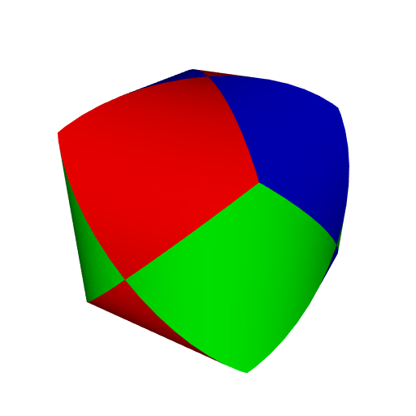
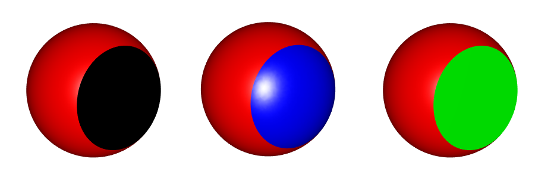
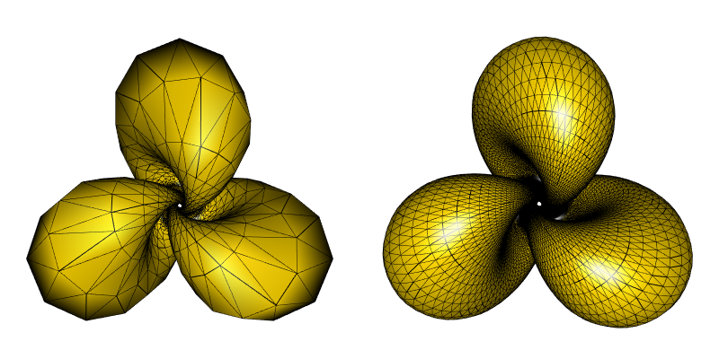
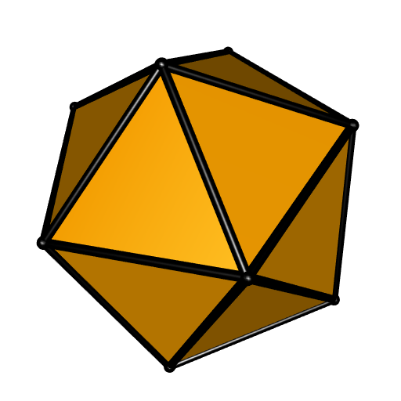

Update of the 'cgalMeshes' package
I made some progress on the cgalMeshes package, that I introduced here. The new version is not on CRAN yet.
In particular, one can know assign some properties to the meshes (the cgalMesh objects). One can assign some face properties: colors and scalars, and some vertex properties: colors, scalars, and normals. Actually a color can be any character string, but if you really set some colors, and you write the mesh to a file, then you’ll retrieve the colors in this file. Some of these properties are preserved by certain operations on the mesh. For example, all properties are preserved when one splits a mesh into connected components. This was my original motivation by the way, more precisely I wanted to retrieve the normals of the mesh in its connected components, because I had a mesh made with the rmarchingcubes package and then it had very good normals (the normals returned by the rmarchingcubes package are obtained by an approximation of the gradient of the function defining the isosurface). The union of two meshes preserves the face properties of the two meshes. This is nice when one does not want to lose the colors.
Here is a couple of new features. Let’s start by the new methods of the cgalMesh objects. The $clip() method now returns two meshes: the clipped mesh and the modified clipping mesh (it is modified by a corefinement). These two meshes inherit the colors of the original meshes. For example, here is the result one obtains by clipping a cylinder to another cylinder, and then clipping the resulting mesh by a third cylinder, with different colors for the three cylinders:

See this page by Paul Bourke for more fun with intersecting cylinders. I’ve tried to do something similar to the intersection of a bunch of random cylinders but my implementation is too time-consuming.
The $fillBoundaryHole() method allows to fill the holes of a mesh. There’s one option, fair, allowing to request a smooth hole filling or a flat hole filling. Here is an example of a sphere with a hole, filled with the option fair=TRUE and fair=FALSE:

Also some subdivision and deformation methods are available now. Below is a coarse mesh of a Hopf torus and the mesh obtained after two iterations of the Loop subdivision:

Now let’s see some new functions of the package. The algebraicMesh() function allows to construct a mesh of an algebraic surface, that is to say an isosurface of the form \(P(x, y, z) = 0\) where \(P\) is a polynomial. Of course it is possible to make an isosurface \(f(x, y, z) = 0\) where \(f\) is arbitrary with CGAL but I don’t know an efficient way to pass a function from R to C++. Here is the Barth decic obtained with this function:

The algorithm used by CGAL is not the marching cubes algorithm. Actually, so far, I didn’t observe any advantage of this algorithm as compared to the marching cubes algorithm (if you know such an advantage, please leave an answer here).
There is now the convexHull() function in the package, and also convexHullsIntersection to (fastly) compute a mesh of the intersection of some convex hulls. I used it to get the intersection of the compound of five tetrahedra:

The sphericalTriangle() function allows to get a mesh of a spherical triangle. Here is a spherical icosahedron:

Hopefully the package will pass the CRAN checks.